Energy Check
A homepage redesign for a Dutch energy consultancy whose website sounded nothing like its team.
- Project type
- Take-home design assignment
- For
- Energy Check (NL)
- Role
- Solo designer
- Scope
- Research to final desktop UI, 2026

- The problem
- A warm, expert team with a formal website that looked like every competitor’s.
- My contribution
- Research, competitive analysis, strategy, UX and visual design. Solo.
- Outcome
- A desktop homepage and a small design system built around the people, outcomes and the EC mark.
- Validation
- A take-home assignment. Not tested with real buyers.
The problem01
The team sounded warm.
The website sounded like everyone else.
My briefing was clear on tone: “professioneel met persoonlijke touch. Je/jij, geen u. Warm team, vakkundig.” On LinkedIn the team writes personal posts that sound exactly like that.
The live site said something else: formal “u” throughout, dense feature lists, no people anywhere, and a sunset windmill as the hero. Closing that gap became the brief behind the brief.
The disconnect02
What the existing site communicated
Before redesigning anything, I wrote down what a first-time visitor would actually take away from the current homepage: a generic energy company, talking about itself in formal language, with no visible people behind it.
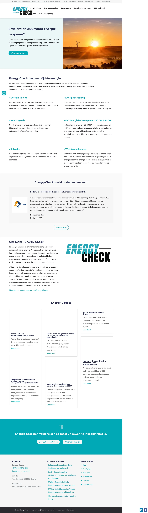
What I found03
Seven competitors. Almost the same website.
I compared seven Dutch energy advisory firms. Different brands, near-identical sites: green stock imagery, formal “u”, the phone number hidden in the footer, “independent” claimed by everyone, feature lists instead of outcomes, no team, one contact button.
Those conventions are safe, which is exactly why they were the opportunity. I turned them into six opportunities for Energy Check, and those became the design moves below.
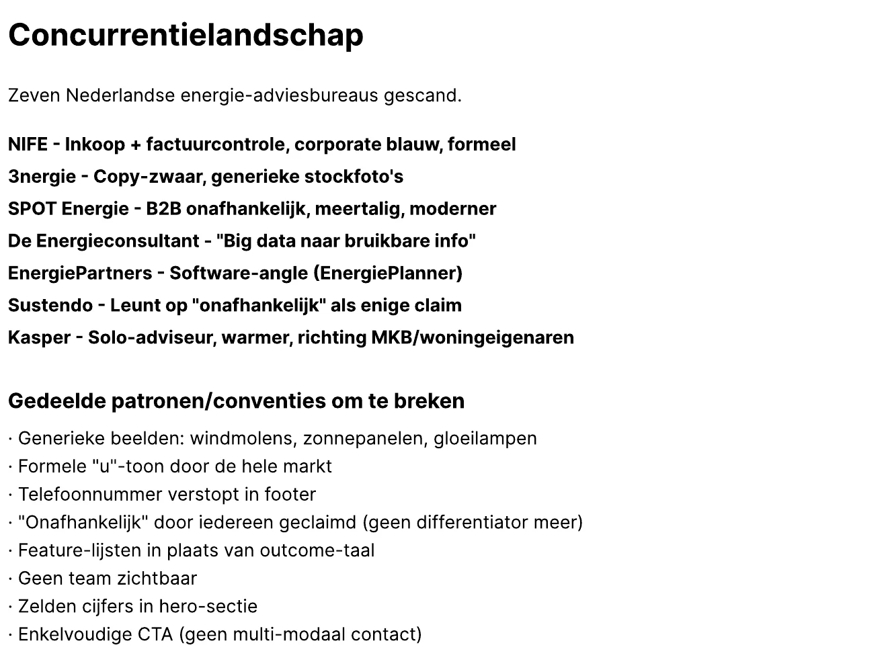
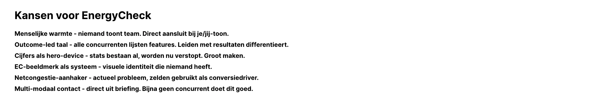
Key decisions04
Five design moves
Each move came from the gap between the team and the site, or from a convention the whole category shares.
- 01
Show the people
- Why
- The warmth lived on LinkedIn and never reached the website.
- Evidence
- No competitor shows its team on the homepage.
- Changed
- A team section with a short personal intro per consultant.
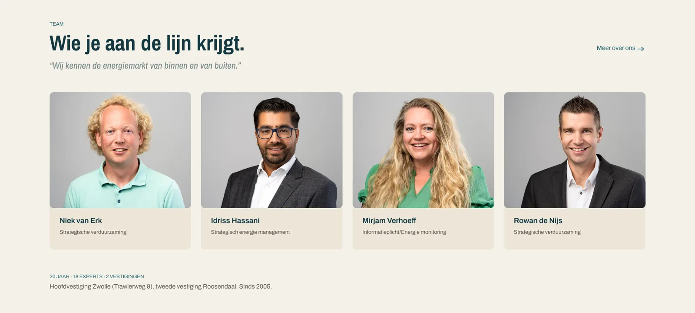
Team section in the final design - 02
Lead with outcomes, not services
- Why
- Visitors buy a result, not a service list.
- Evidence
- The numbers already existed but were buried in body copy: 30% of national energy lost in buildings, 20% savings often achievable.
- Changed
- Large outcome figures directly under the hero, services grouped by result.
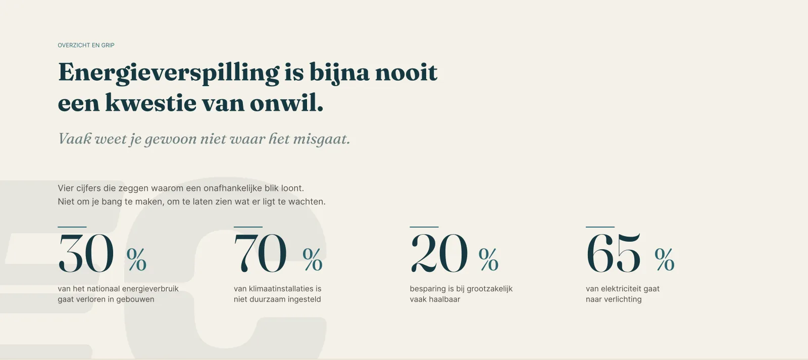
Outcomes section with large figures - 03
Talk like the team
- Why
- The briefing asked for je/jij, and it’s rare in this category.
- Evidence
- Every competitor uses the formal “u”. One of the key messages Energy Check gave me was “Bouw met ons mee aan de energietoekomst”.
- Changed
- The copy uses je/jij throughout. The hero turns their own key message into “Bouw met ons mee aan je energietoekomst.”
The hero in je/jij - 04
Make the person doing the work easy to reach
- Why
- Direct contact with the consultant who does the work was a real differentiator, hidden on the About page.
- Evidence
- The briefing asked for several routes, phone, WhatsApp and a Calendly introduction, and explicitly no pushy sales flow. Competitors offer one contact button.
- Changed
- A recurring line in the process section, and three equal contact options at the end of the page.
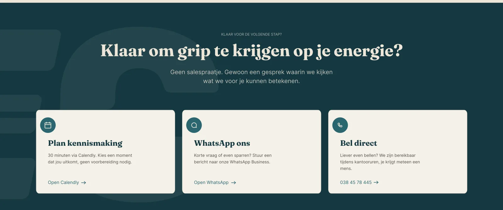
Three equal ways to get in touch - 05
Turn the EC mark into a system
- Why
- The new logo was a deliberate break with the old one, and the briefing said the EC mark could be used in the design.
- Evidence
- No competitor has a visual signature beyond green imagery.
- Changed
- The wordmark returns as a large graphic layer behind the hero photo, as a watermark and as a divider.
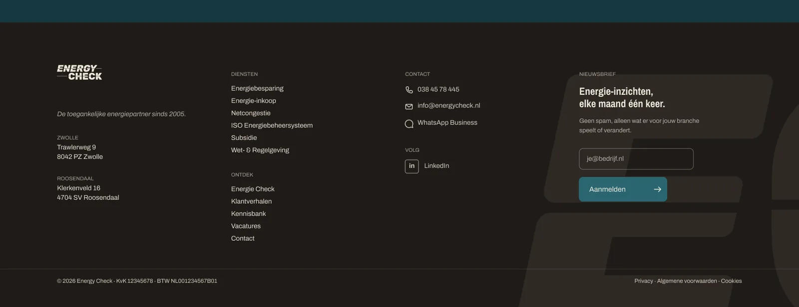
The wordmark as a watermark in the footer
The hero decision05
Two directions, combined
I designed two hero directions and wrote the trade-offs under each, so the conversation would be about strategy, not taste. Option A, team in context, was my recommendation: it breaks the category convention hardest.
Option B made the EC mark the graphic and works without photography. In the end I combined them: the EC mark from Option B as the graphic system, with a framed photograph from Option A on top. The wordmark carries the identity, the photo brings in the people and the real-world context.
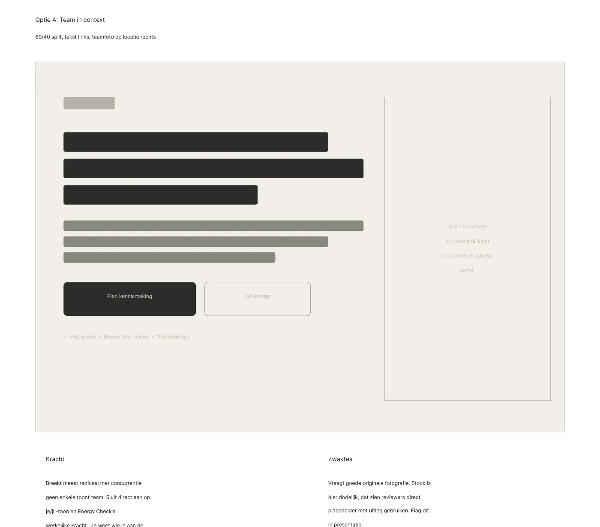
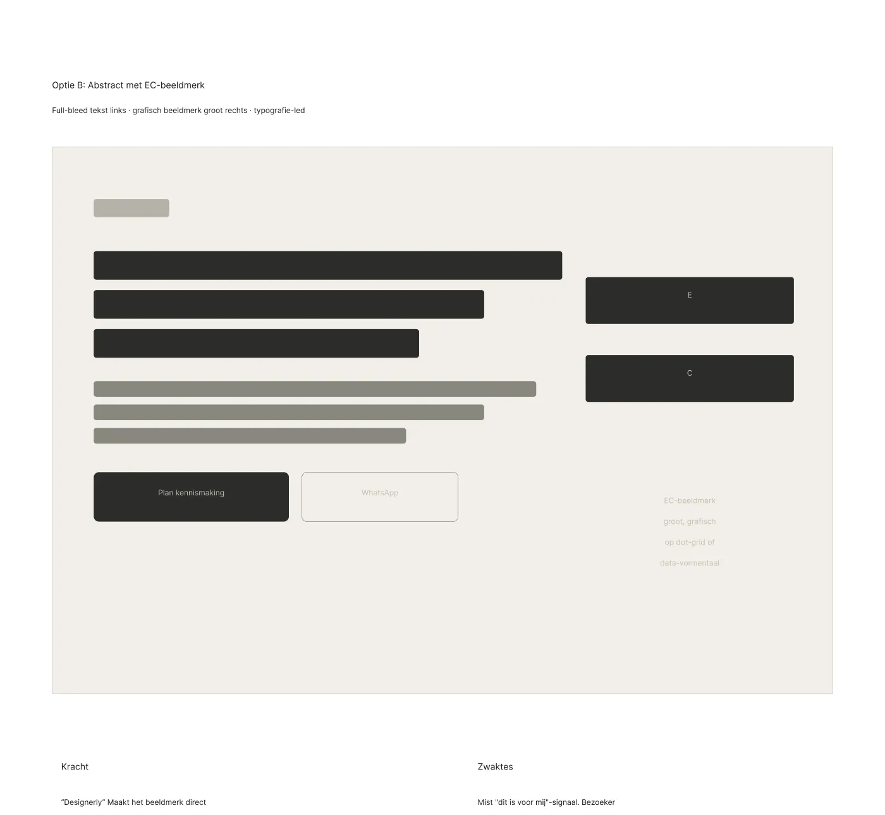
Structure first06
From mid-fidelity to final
Before any styling, I laid out every section in mid-fidelity with a note on the job it does. Most of those decisions survived into the final page unchanged; the styling came after.
Services
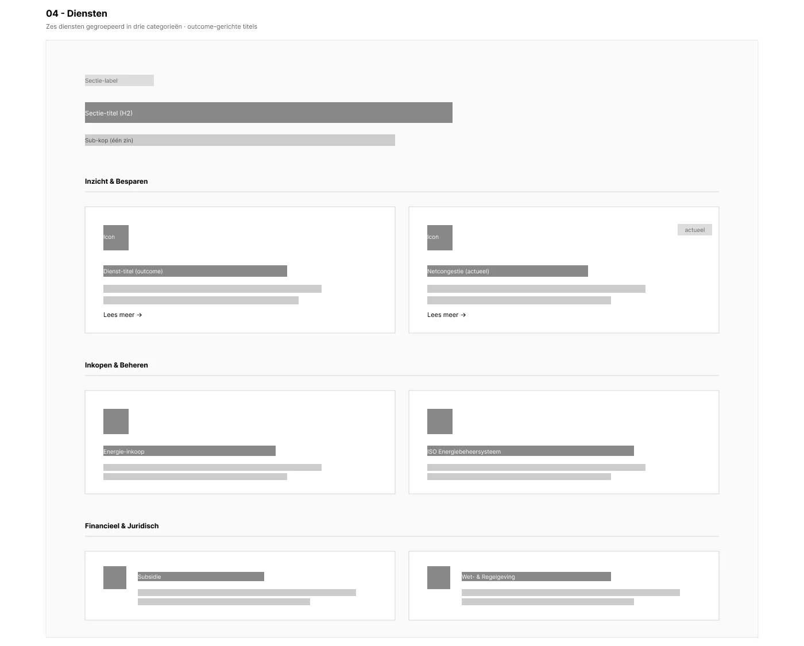
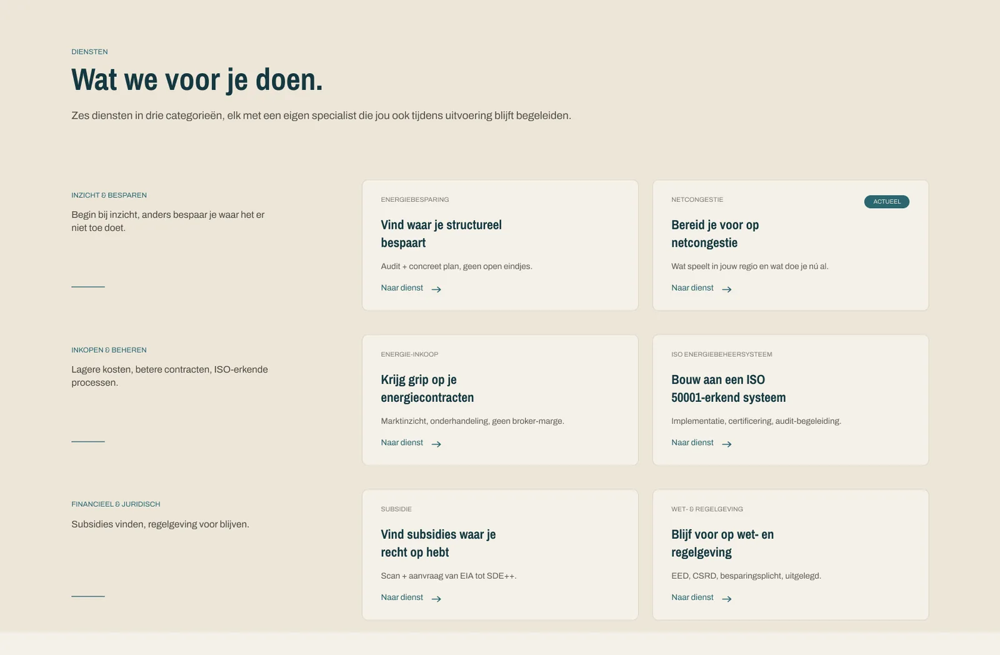
Way of working
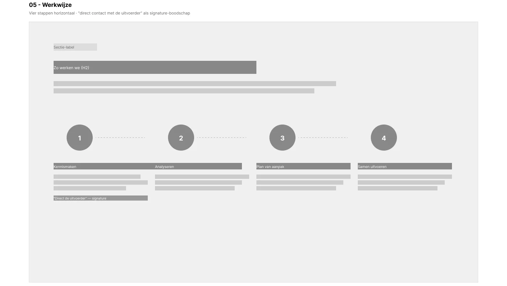
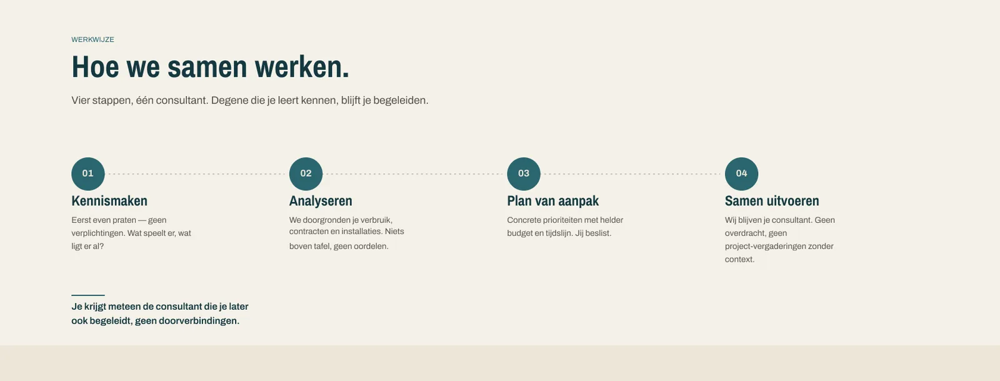
Team
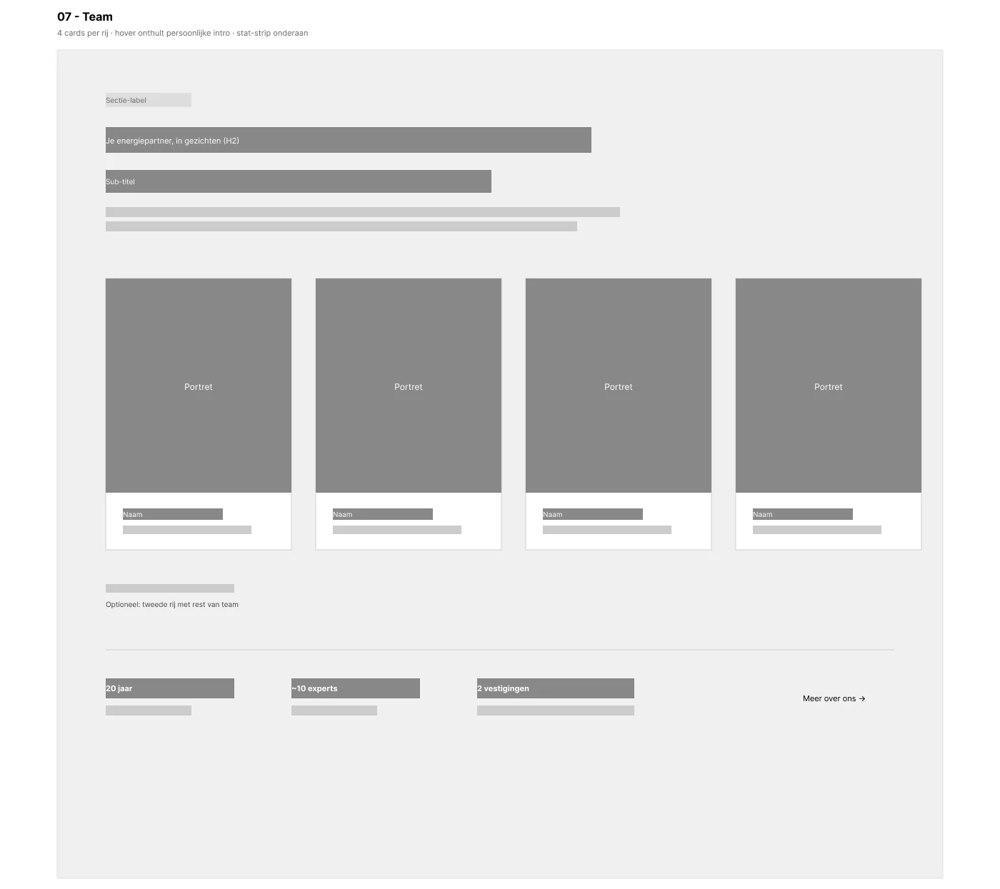
Final call to action
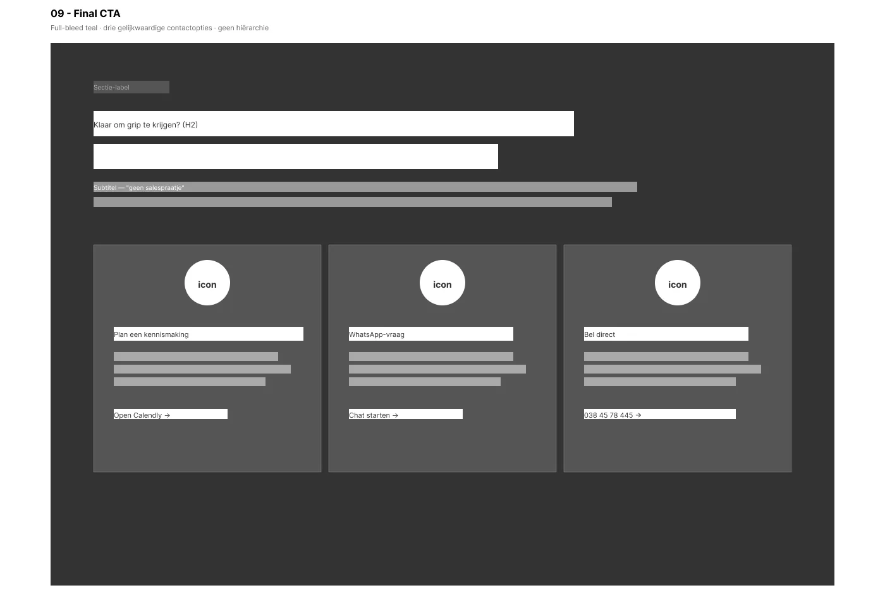
Final design07
The full page and its system
The page is long on purpose: it earns trust section by section, from outcomes and process to the team and three ways to make contact. Underneath it sits a small system: type, colour, spacing, the wordmark treatments and the components every section is built from.
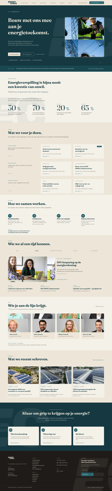
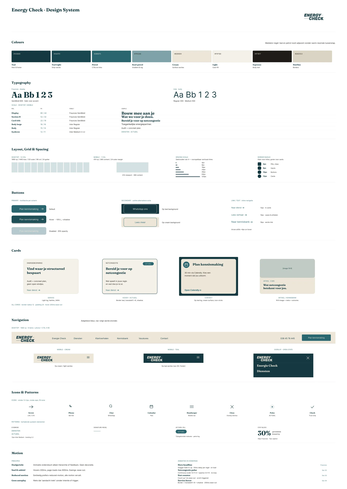
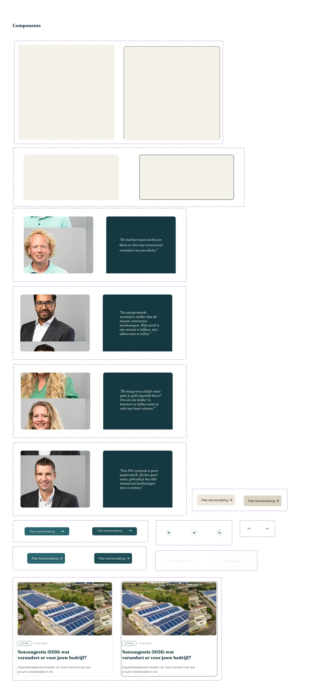
Reflection08
What’s still open
- Still open
- The page assumes what buyers care about: overview, control and easy contact. It hasn’t been in front of a single real buyer.
- Next
- A mobile version. The brief was desktop-only, but a buyer is just as likely to be scrolling between meetings.
- What it taught me
- Writing the trade-offs under each direction made the discussion about strategy. That’s the conversation I want to keep having.